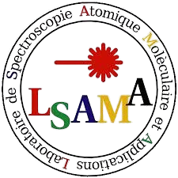
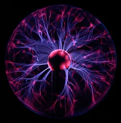
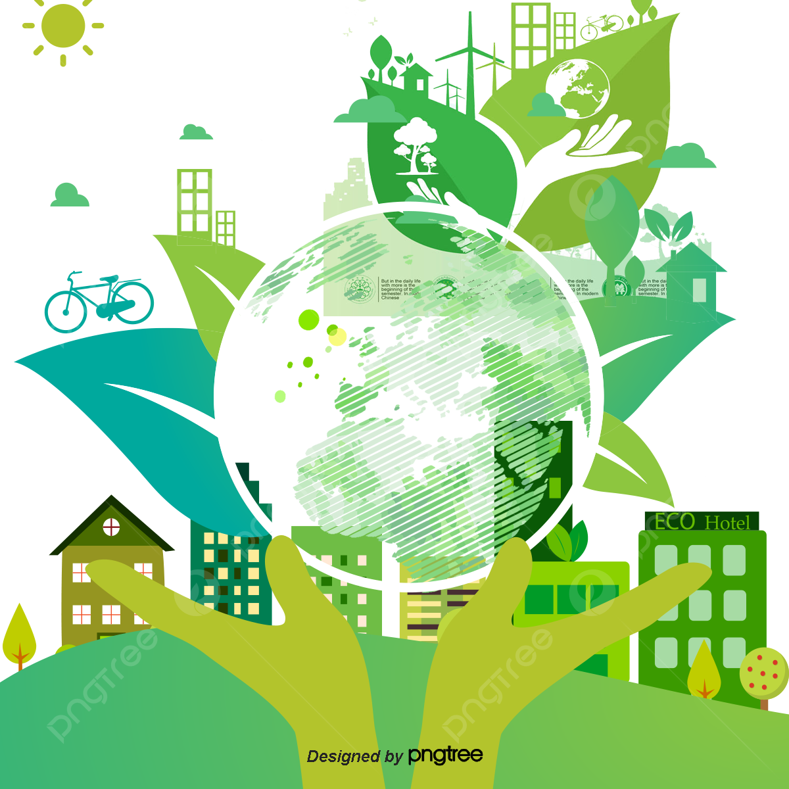

Évolution du Laboratoire
Du LPAM fondé dans les années 1970 au LSAMA d'aujourd'hui, une longue tradition d'excellence scientifique

Création du LPAM
Création du Laboratoire de Physique Atomique et Moléculaire à la FST par Taoufik Ben Ména. Ont suivi : Zaïneb Ben Ahmed, Zohra Ben Lakhdar, Nejm-Eddine Jaïdane.

Direction de Zohra Ben Lakhdar
Zohra Ben Lakhdar, lauréate du Prix L'Oréal-UNESCO 2005, dirige le laboratoire nouvellement fondé et lui confère une reconnaissance internationale.

Direction de Nejm-Eddine Jaïdane
Nejm-Eddine Jaïdane assure la direction pendant 13 ans, consolidant les équipes et développant les axes de recherche fondamentale et appliquée.

Direction de Mourad Telmini
Mourad Telmini est l'actuel directeur du laboratoire, poursuivant le développement des collaborations nationales et internationales.
Axes de Recherche
Le laboratoire s'intéresse à l'étude des systèmes moléculaires, petits et grands, avec des applications variées dans les domaines de la santé, de l'environnement et de l'industrie.
Petits systèmes moléculaires
Étude en phase gazeuse de molécules comportant moins de cinq atomes à l'aide de méthodes quantiques avancées (MCSCF, RCCSDT, MRCI, etc.). Ces études permettent de prédire la stabilité, la spectroscopie et la dynamique d'espèces instables, notamment dans le milieu interstellaire.
Grands systèmes moléculaires
Utilisation des méthodes DFT et TD-DFT pour comprendre la réactivité et les mécanismes d'oxydation de molécules complexes, avec des applications dans les secteurs pharmaceutique et cosmétique.
Études expérimentales de mélanges complexes
Analyse de mélanges tels que les huiles végétales, les huiles essentielles ou les hydrocarbures par des techniques comme la LIBS, la LIF, la spectroscopie EEM et la RPS. L'objectif est de proposer des méthodes simples de contrôle qualité adaptées au terrain.
Mots-clés illustrés
Les grandes thématiques scientifiques du laboratoire




État des Connaissances
La place du LSAMA à l'échelle nationale et internationale
Au niveau national
Le laboratoire est le leader en Tunisie dans le domaine de la spectroscopie atomique et moléculaire et ses applications, référencé LR01ES09 par le ministère de l'Enseignement Supérieur et de la Recherche Scientifique.
Au niveau international
La spectroscopie atomique et moléculaire est en plein essor, notamment avec les technologies quantiques et la manipulation cohérente des atomes, ions et molécules par laser. Des techniques comme la LIBS ou la fluorescence se développent pour des applications en médecine, environnement et agriculture.
Où nous trouver ?
Faculté des Sciences de Tunis, Département de Physique — 2092 Manar II, Tunis
Galerie Photos
Les activités et moments forts du laboratoire